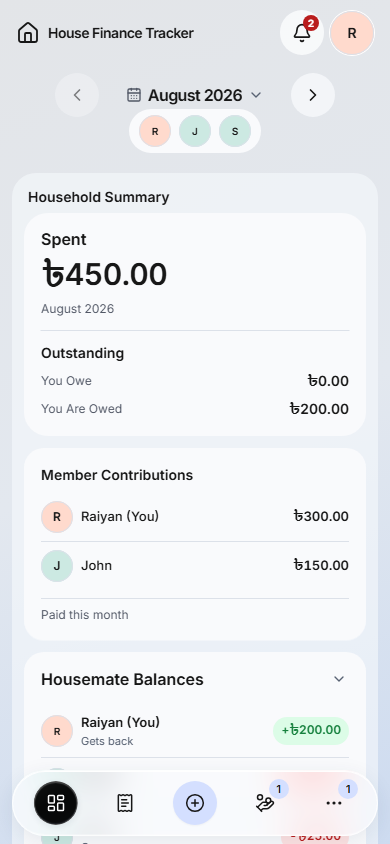
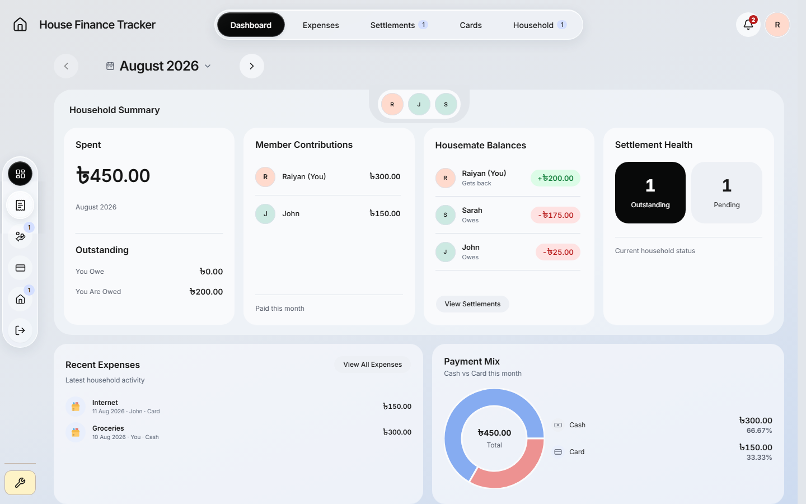

One moving glass selection
The selected pill now expands, travels as translucent glass, compresses and springs into its resting shape, following the Safari reference. Desktop hover remains; mobile has no hover. These are actual local application captures with synthetic data.
Verification record · Evidence summary · Desktop content comparison. Recordings show normal-speed tab changes. Phase captures pause real native animations for inspection; they do not represent separate UI states.
Desktop transition recording
Mobile transition recording
Mobile at rest

Mobile Expenses

Desktop at rest

Desktop hover
Sidebar hover

More remains available

Desktop motion phases
Mobile motion phases
Local implementation only. Clipped navigation magnification and highlights approximate the optical detail; this does not claim Apple's native refraction or a physical-device GPU benchmark.